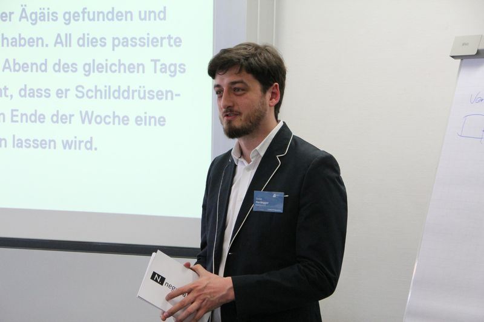

Framing, Gender & Litigation-PR
Workshop im Vorprogramm der Litigation-PR-Tagung 2020, ZHAW · Daniel Hardegger und Claudia Müller
Der knapp zweieinhalbstündige Workshop begann mit einer Einführung ins Framing – der unterschiedlichen Darstellung derselben Inhalte – und Beispielen, wie Framing gezielt eingesetzt wird, um eine erwünschte Wirkung zu erzeugen.
Die Kernfrage drehte sich um Unterschiede zwischen den Geschlechtern, ihren Lebensrealitäten und deren finanziellen Folgen: Unterschiede in Gehalt und Investitionsverhalten führen dazu, dass Frauen ungleich häufiger von finanzieller Abhängigkeit oder Altersarmut bedroht sind. Am Fallbeispiel Scheidung wurde diskutiert, welche rechtlichen Grundlagen gelten, welche finanziellen Folgen für Männer und Frauen entstehen und welches Framing sich lohnt oder vermieden werden sollte. Obwohl die Rechtslage für beide Geschlechter gleich ist, können die Konsequenzen eines Rechtsstreits und die Emotionen der Öffentlichkeit stark vom geschlechterspezifischen Framing beeinflusst werden.
Some Influences Die Hard
Einführung in die Taxonomie und den Einfluss von Falsch- und Desinformation · Workshop im Vorfeld der Litigation-PR-Tagung 2019, ZHAW · Christoph Abels und Daniel Hardegger
Der Workshop führte in die Begriffe ein – Was ist Misinformation? Wie unterscheidet sie sich von Desinformation? Was sind Deep Fakes? – und diskutierte die Einflussgrössen, die die Verbreitung begünstigen: veränderter Medienkonsum, Verbreitungsmechanismen über Social Media, journalistische Praktiken und individuelle kognitive Verzerrungen.
Danach ging es um die Folgen für die Rechtskommunikation: Szenarien, in denen Deep Fakes einem Unternehmen schaden können, von vermeintlichen Straftaten des CEO bis zu erfundenen Millionenspenden, sowie die Grenzen der forensischen Erkennung und mögliche Gegenmassnahmen. Anhand zweier Fallbeispiele erarbeiteten die Teilnehmenden die Implikationen aus Sicht von Anklage und Verteidigung – inklusive der Frage, ob sich aktive Gegenmassnahmen angesichts ihrer Kosten und unsicheren Wirkung überhaupt lohnen.
Systemische Strategieentwicklung in der Litigation-PR
Workshop an der Litigation-PR-Tagung 2018, ZHAW · Christian Schlimok (Novamondo) und Daniel Hardegger

Design Thinking, Strategic Foresight und streikende Professoren: Knapp zwanzig Teilnehmende lernten neue Methoden zur Entwicklung nachhaltiger Strategien in der Litigation-PR kennen und wendeten sie auf den Streik der Professoren in Grossbritannien im Rahmen der Rentenreform an.
Christian Schlimok zeigte, wie Design Thinking in Verbindung mit Systemtheorie hilft, Akteure besser zu verstehen – mit Personas als Vorlagen für Personen und «Organisationas» für Organisationen. Daniel Hardegger kombinierte diese Methoden mit Verhandlungstheorie und Strategic Foresight. In Zweiergruppen erarbeiteten die Teilnehmenden die Organisationa je eines Stakeholders; anschliessend wurden die Erkenntnisse in eine «Litigation-PR Map» übertragen, die sichtbar machte, welche Stakeholder gleiche, ähnliche oder gegensätzliche Positionen und Interessen haben. Daraus leiteten die Teilnehmenden Kommunikationsstrategien für einzelne Akteure und Gruppen ab.
Internationale Verhandlungen im privaten und öffentlichen Sektor
Konferenz am 6. November 2015, Institut für Management und Recht, ZHAW · Dr. James T. Peter, Dr. Vitalijs Butenko, Alessandra Vellucci
Die ausverkaufte Konferenz vermittelte drei Sichtweisen auf das Verhandeln in unterschiedlichen Rahmen. Dr. James T. Peter zeigte in «Was ist Wirtschaftsmediation», wie Verhandlungen im Privatsektor aussehen – und warf die Frage auf, ob das Ziel eine Win-win-Lösung ist oder der grösstmögliche eigene Vorteil. Dr. Vitalijs Butenko (ETH Zürich) führte unter dem Titel «Negotiation Engineering» in die Spieltheorie ein und zeigte, wie sie Entscheidungen im Alltag verbessern kann. Alessandra Vellucci, Leiterin des Intergovernmental Support Service der UNCTAD, berichtete aus echten Verhandlungsdilemmata in internationalen Gremien.
Zum Abschluss spielten die Teilnehmenden in zwölf Runden das Gefangenendilemma – und kehrten zur Frage vom Morgen zurück: Ist eine Win-win-Lösung das Hauptziel einer Verhandlung?
Kulturelle Unterschiede in Verhandlungen
Konferenz am 28. November 2014, Institut für Management und Recht, ZHAW · Prof. Dr. Patrick L. Krauskopf, Khaldoun Dia-Eddine, Dr. Andres Smith-Serrano
Die erste Konferenz von Negotiations.CH gab Einblick in die Herausforderungen von Verhandlungen mit Menschen unterschiedlicher kultureller Herkunft. Prof. Dr. Patrick L. Krauskopf führte in die Harvard School of Negotiations und in verbale wie nonverbale Kommunikation ein. Khaldoun Dia-Eddine, Verhandlungsanalytiker und Dozent an der ZHAW, sprach über Verhandlungssimulationen: Sie können echte Verhandlungen nie vollständig abbilden, erlauben aber, Techniken zu trainieren und neue Ansätze auszuprobieren, ohne reale Nachteile zu riskieren. Dr. Andres Smith-Serrano, UN Genf, berichtete als «Verhandlungspraktiker» aus politischen Verhandlungen, insbesondere im Nahen Osten.
Ein sehr umfassender und lohnender Tag mit einer motivierten und wissbegierigen Gruppe, die die Verbindungen zwischen Theorie und Praxis kulturübergreifender Verhandlungen erforschte. – Dr. Andres Smith-Serrano
Zum Abschluss organisierte Negotiations.CH eine kurze Verhandlungssimulation zur Einführung einer Frauenquote in Verwaltungsräten. Ziel war nicht die Lösung, sondern das Feedback der Experten, die die Verhandlung jederzeit unterbrechen durften, zu den Unterschieden zwischen politischen Verhandlungen und solchen zwischen Unternehmen.